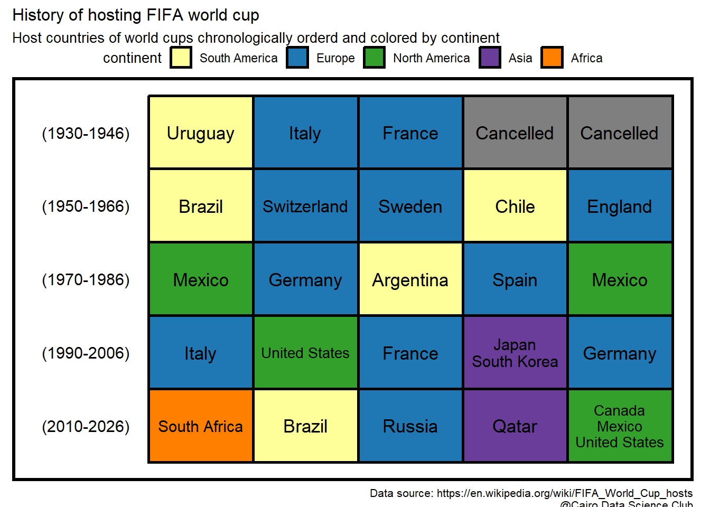
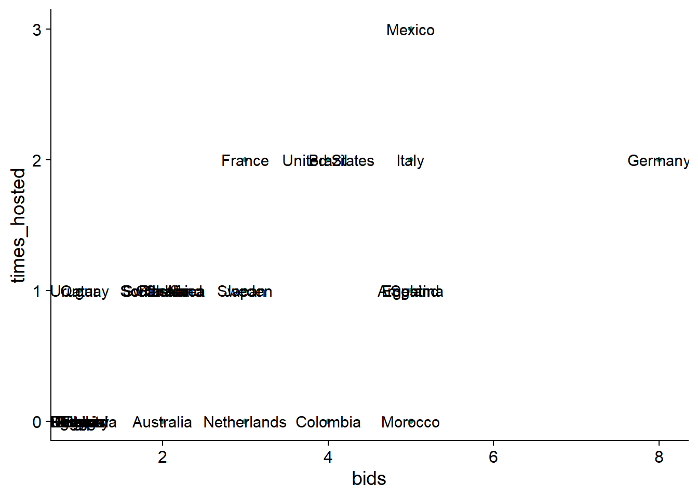

1.4 What is the history of bidding for world cup?
Now let us shift our focus to yet another interesting question. In this section we will explore the bidding history to host the world cup.
Let’s start by making a bar-plot that show the number of successful bids for each country of all submitted bids.
First, sort the countries based on the number of bids, then the times hosted.
(bar_bid_df1 <- tbls_lst$total_bids_by_country %>%
distinct(country_name, bids, times_hosted) %>%
arrange(bids,times_hosted) %>%
mutate(country_name = factor(country_name, levels = unique(country_name))) )## # A tibble: 35 × 3
## country_name bids times_hosted
## <fct> <int> <dbl>
## 1 Austria 1 0
## 2 Belgium 1 0
## 3 Egypt 1 0
## 4 Greece 1 0
## 5 Hungary 1 0
## 6 Iran 1 0
## 7 Libya 1 0
## 8 Nigeria 1 0
## 9 Peru 1 0
## 10 Portugal 1 0
## # … with 25 more rowsNext, add a layer of bars showing the times of bids using a transparent color
(bar_bid_plt <- bar_bid_df1 %>%
ggplot()+
geom_col(aes(country_name, bids), fill = "#35978f", alpha = 0.3))
Then, add yet another layer of bars showing the times hosted using solid version of the same color
(bar_bid_plt <-bar_bid_plt +
geom_col(aes(country_name, times_hosted), fill = "#35978f", alpha = 1)+
coord_flip())
Finally, add world cup image in the background, text, and customize the theme
(bar_bid_plt +
#add world cup image
ggimage::geom_image(data = data.frame(x = 16, y = 7),
aes(x,y),
image = wc_img,image_fun = transparent,
size = 1.1)+
#add text
labs(title = "History of hosting FIFA world cup",
subtitle = "Number of world cup bids compared to times hosted",
caption = caption_cdc,
y = "Numer of bids")+
#define theme
theme(axis.title.y = element_blank(),
axis.text.y = element_text(size = 7.6),
plot.background = element_rect(fill = "#FAECD6"),
panel.background = element_rect(fill = "#FAECD6"),
title = element_text(colour = "#01665e", size = 9)))
Nice! The plot shows that most of the time, it takes more than one bid to host the world cup.

Let’s enforce the relationship between bids and times hosted using a point plot.
First, let’s plot the number of bids on the x-axis and the time hosted on the y-axis
(point_bid_plt <- bar_bid_df1 %>%
ggplot(aes(bids, times_hosted))+
geom_point(color = "#35978f"))
Next, let’s add the name of the country to the repreresentitive point
(point_bid_plt <- point_bid_plt+
geom_text(aes(label = country_name),
size = 4))
Oh no! Since many countries share the same bids and hosting statitics, we end up with a dramatic case of text over-plotting.

To overcome this, we’ll replace geom_text() with geom_text_repel() from the package ggrepel. Let’s first look at the effect of this function and then explain what it does.
#remove the last layer added of geom_text() before using geom_text_repel()
point_bid_plt$layers[[2]] <- NULL
(point_bid_plt <- point_bid_plt+
ggrepel::geom_text_repel(aes(label = country_name),
size = 4,
min.segment.length = 0,
max.overlaps = Inf,
segment.color="grey60",
box.padding = 0.4
)+
#expand the plotting panel to free some room for the repelled text
scale_x_continuous(breaks = 1:8,
expand = expansion(add = c(1,0.5)))+
scale_y_continuous(breaks = 0:3,
expand = expansion(add = c(1,0.5))))
As the name says, geom_text_repel() makes the text repel away from each other to avoid over-plotting. The text also repel away from the edges of the plot. To avoid the undesired effect of later, we expanded the plotting are using the function expansion() in x and y direction
Finally, add world cup image, the title, and beautify the plot by coloring the background
point_bid_plt+
#add world cup image
ggimage::geom_image(data = data.frame(x = 7, y = 1.2),
aes(x,y),
image = wc_img,image_fun = transparent,
size = 1.2)+
labs(title = "History of hosting FIFA world cup",
subtitle = "Number of world cup bids compared to times hosted",
caption = caption_cdc,
x = "Numer of bids",
y = "Number of times hosted")+
theme(plot.background = element_rect(fill = "#FAECD6"),
panel.background = element_rect(fill = "#FAECD6"),
panel.grid.major = element_line(colour = "white"),
title = element_text(colour = "#01665e"))
It’s now clear that Germany has the lion’s share of submitted bids, while Morocco is obviously lacks a bit of luck!
What’s missing from the plots above is the time where bids and hosting took place. Wouldn’t it be interesting to have a single plot showing the number and dates of world cup bids? I would say YES!

Let’s work towards building this exciting plot!
The data is ready for visual inspection! The idea is to look on the data in the form of a tile plot showing the year on the x axis and country on the y axis. Bids will be represented using faint colored boxes.
df_bid_host1 <- tbls_lst$list_of_hosts %>%
full_join(tbls_lst$total_bids_by_country) %>%
filter(!str_detect(country_name, "Cancelled")) %>%
arrange(bids) %>%
mutate(country_name = factor(country_name, levels = unique(country_name)),
bids = factor(bids, levels = sort(unique(bids), decreasing = TRUE)))## Joining, by = c("country_name", "country_code")(tile_bid_host_plt <- df_bid_host1 %>%
ggplot()+
geom_tile(aes(year, country_name),
fill = "#c7eae5", color = "white", size = 0.5) )
Next, add another layer of tiles with solid color showing the years of hosting the world cup.
#select data with at least one hosting
df_bid_host2 <- df_bid_host1 %>%
filter(times_hosted>=1 & host_year == year)
(tile_bid_host_plt <- tile_bid_host_plt +
geom_tile(data = df_bid_host2,
aes(year, country_name),
fill="#35978f", color = "black", size = 0.5))
Whether you’re a football fan or have an observant eye, it’s not difficult to tell that there are gap years in the plot in which the world cup was cancelled. Let’s highlight this part of the plot to, first, give a complete picture of the history of hosting the championship and , second, to make it clear that it’s not a case of missing data.
(tile_bid_host_plt <- tile_bid_host_plt +
#add a transparent rectangle between 1942 and 1946
geom_rect(data = tibble(xmin = 1942, xmax = 1946, ymin = -Inf, ymax = Inf),
mapping = aes(ymin = ymin, ymax = ymax, xmin = xmin, xmax = xmax),
alpha = 0.05,
fill = "black",
color = "black",
size = 0.1,
inherit.aes = FALSE)+
#overlay an explanation on top the rectangle
annotate("text",
angle = 90, x = 1944, y = 17.5,size = 2.5,color = "black",
label = "World Cups of 1942 and 1946 were both cancelled because of WW2")+
#represet years on the x axis with 4 year interval between 1930 and 2026
scale_x_continuous(breaks = seq(1930, 2026,4)))
Let’s finish by adding the title and removing the y axis
(tile_bid_host_plt <- tile_bid_host_plt +
labs(title = "History of hosting FIFA world cup",
subtitle = "Timeline of bidding (faint boxes;no outline) and hosting (dark boxes;black outline) countries of FIFA world cup",
caption = caption_cdc)+
theme(title = element_text(size = 9),
axis.text.x = element_text(size = 8, angle = 45,hjust = 1),
axis.ticks.y = element_blank(),
axis.line.y = element_blank(),
axis.title.y = element_blank(),
axis.text.y = element_text(size = 7.6),
panel.grid.major = element_line(colour = "grey80"),
panel.grid.major.x = element_blank()))
This a comprehensive, yet clear, visualization of bidding and hosting the world cup! We can simultaneously make interesting observations about the years (e.g. 1990 and 2019 received the largest number of bids!) and the history of the hosting countries (e.g. 2026 will be the first world cup to be hosted by three countries!).

Let’s take this plot to the next level and augment it with the results of the hosting country. Furthermore, as a cherry on top, will add respective flag of each country. To start with, we’ll get the country code that would allow us to find a country’s flag.
#colors of the different results (First place, runner up, third place, ... etc)
res_cols <- c("#FFD700",
"#d9d9d9",
"#CD7F32",
"#f6e8c3",
"#969696",
"#737373",
"#525252",
"#000000"
)
names(res_cols) <- results_order[-length(results_order )]Already tired? We’re almost there!

Let’s piece everything together for one last time. We start by establishing the tiles layer and color the bids and hosts.
(tile_bid_host_plt2 <- df_bid_host1 %>%
ggplot()+
#tiles for bidding
geom_tile(aes(year, country_name),
fill = "grey85", color = "white", size = 0.5) +
#over-plot tiles of the results
geom_tile(data = tbls_lst$host_country_performances %>%
filter(result != "TBD") ,
aes(year, country_name, fill = result),
color = "black", size = 0.5) +
#add results colors
scale_fill_manual(values = res_cols))
We then break the x-axis by 4 years interval, add country flag, and the world cup in the background.
(tile_bid_host_plt2 <- tile_bid_host_plt2+
#define the years intervals shown on the x axis and expand left side for the flags
scale_x_continuous(breaks = seq(1930, 2026,4),
expand = expansion(add = c(4,NA)))+
#add country flag
ggimage::geom_flag(data = . %>%
filter(!is.na(country_code)) %>%
distinct(country_name, country_code),
aes(y = country_name, image=country_code),
x = 1925,
size =0.03)+
#add world cup image
ggimage::geom_image(data = data.frame(x = 1952, y = 18),
aes(x,y),
image = wc_img,image_fun = transparent,
size = 1.2))Highlight and annotate the cancelled years
(tile_bid_host_plt2 <- tile_bid_host_plt2 +
#add rectangle to highlight cancelled years
geom_rect(data = tibble(xmin = 1942, xmax = 1946, ymin = -Inf, ymax = Inf),
mapping = aes(ymin = ymin, ymax = ymax, xmin = xmin, xmax = xmax),
alpha = 0.05,
fill = "black",
color = "black",
size = 0.1,
inherit.aes = FALSE)+
#Annotate the rectangle
annotate("text",
angle = 90, x = 1944, y = 17.5,size = 2.5,color = "black",
label = "World Cups of 1942 and 1946 were both cancelled because of WW2"))
Finally, add the title and the control the theme
(tile_bid_host_plt2 <- tile_bid_host_plt2 +
#define title and subtitle
labs(title = "History of hosting FIFA world cup",
subtitle = "Timeline of bidding (faint boxes;no outline) and hosting (dark boxes;black outline) countries of FIFA world cup",
caption = caption_cdc)+
#control the order and size of the legend keys
guides(fill = guide_legend(nrow = 1,
keywidth = 0.85,
keyheight = 0.25))+
theme(title = element_text(size = 9),
axis.text.x = element_text(size = 8, angle = 45,hjust = 1),
axis.ticks.y = element_blank(),
axis.line.y = element_blank(),
axis.title.y = element_blank(),
axis.text.y = element_text(size = 7.6),
panel.grid.major = element_line(colour = "grey80"),
panel.grid.major.x = element_blank(),
legend.title = element_blank(),
legend.text = element_text(size = 6.9),
legend.spacing.x = unit(0.1,"cm" ),
legend.position = "top"
))
WOW! We’ve managed to summarize the history of world cup in a single plot!
Mission accomplished!